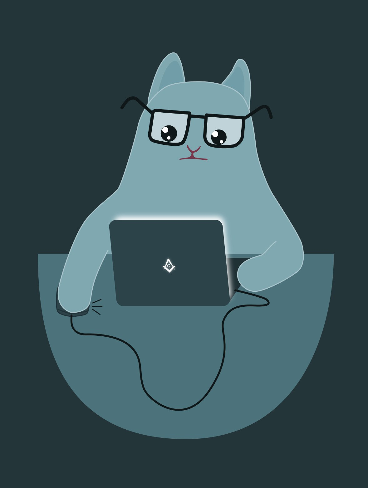

Глава 1. Тестировщик Багослав.
Этот текст создан для тестирования магического теста и файла тестирования.
Он не имеет смысла и магического тестирования, но он создан для тестирования и имеет мораль тестировщика.
В далеких просторах кодовых вселенных жил-был тестировщик по имени Багослав. Его дни проходили в бесконечных дебрях багов и ошибок, где он мастерски отыскивал несоответствия между мечтой разработчиков и суровой реальностью программного кода.
Однажды Багослав обнаружил загадочный тикет, который сам по себе был не багом и не фичей. Это был тикет с заголовком "Слоны в облаках".
Тестировщик задумался: "Что же это может значить?" Он немедленно приступил к расследованию, вооружившись лупой и чашкой кофе с ароматом ванили.
В поисках ответов он наткнулся на страницу документации, где по непонятным причинам нарисовали слона в смешном цилиндре, танцующего на радуге. Вдохновленный, Багослав решил протестировать несуществующий функционал. Он создал тест-кейс под названием "Слоны танцуют: версия 2.0", который включал шаги по внедрению хореографического кода.
Процесс пошел так же быстро, как и утренний завтрак с кефиром. Никаких багов не было найдено, кроме одного: время продолжало течь, а тестировщик так и не смог понять, как слоны могут существовать в облаках. Он закрыл тикет с пометкой "недостижимо", и его ждали новые приключения в мире абсурда.
И так, с каждым новым тикетом, Багослав открывал для себя, что бессмысленность — это просто другая сторона реальности, а тестирование — это искусство ловить невидимое в мире, полном хаоса и странностей.
След.страница
